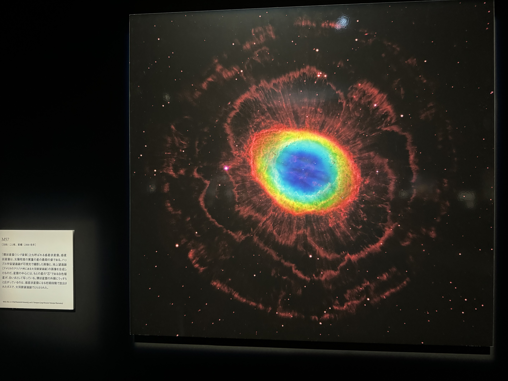

空気はたくさんの小さな粒でできている
木星・土星の大気成分で多いのは水素やヘリウムです。この水素はたくさんの粒からできています。
(1) 水素ガス : 2gの水素の中に
600000000000000000000000 個の粒子
※水素分子イメージ

(2) 個体水素 : 1gの水素の中に
600000000000000000000000 個の粒子
※水素イオン(陽子)と電子のイメージ
核融合反応で大きな原子ができる
陽子どうしがぶつかり陽子と中性子ができる(原子核)。新星爆発で陽子と電子の並びがなくなり白色矮星ができる。
白色矮星の周りには惑星状星雲ができることもあります。
超新星爆発で陽子と電子が圧縮され中性子星ができる。
ブラックホールはさらに圧縮された状態です